from tensorflow.keras.applications.resnet50 import ResNet50,
preprocess_input, decode_predictions
model = ResNet50(weights='imagenet')
x = preprocess_input(image)
preds = model.predict(x)
results = decode_predictions(preds)Introduction
As the field of Machine Learning progresses, the requirement for sharing your progress with the world increases exponentially. This holds true especially for early/mid-stage ML startups that are looking to get their product across to potential users as soon as possible while being able to maintain the load in a performant as well as cost-effective way.
This includes being able to leverage the latest research, as well as handling a ton of DevOps aspects related to maintaining the services provided. Along with that, preparing and deploying the models that have been developed in-house as a SaaS offering becomes a critical step in the complete pipeline.
In this article, I will be giving a brief introduction to how one can make use of pre-trained models available for free on the internet, consume and mold them to a specific use-case and then deploy it using TensorFlow Serving, Docker and Google Cloud’s Vertex AI.
This article assumes that you have a working knowledge of how Neural Networks work, how Docker works and what TensorFlow is. If you do not have the pre-requisite knowledge or require a refresher, consider going through the following resources:
This article is an addition to the slides, talk, and code presented as part of my presentation at GDG DevFest Raipur 2022 for the topic with the same title.
Table of Contents
This article can be divided into 2 stages.
Training
Step 1: What are keras.applications and Hugging Face?
Step 2: How to use pre-trained models?
Example: Using it to make a customized pre-trained model
Deployment
Step 3: Use TensorFlow Serving and SavedModel
Step 4: Export SavedModel to Docker Image
Step 5: Create Vertex AI Model and Endpoints
Step 6: Perform Testing and Inference
Training
Step 1: What are keras.applications and Hugging Face?
Pre-trained models are specific Deep-Learning models that have been trained on a certain dataset of a given task and are available freely on the internet. These models have weights for the network hosted in a way that they can be retrieved. If the user requires, they can also fine-tune the weights by initializing the model and training, using the pre-trained model as a starting point compared to using Random initialization.
The process of taking pre-trained models and fine-tuning them or using them on a different task than the one they were originally trained for, is known as Transfer Learning.
But where do you find these models?
- TensorFlow-Keras ecosystem
One of the most mature ecosystems for pre-trained models is available using the keras.applications Module or using TensorFlow Hub. keras.applications contains a total of 38 Vision models pre-trained on the ImageNet dataset by the team behind Keras. They also provide a table that details statistics like the number of parameters within the model as well as benchmarks like inference latency on a general configuration. These models are extensively used and are available free of charge.
Through this, you don’t need to just get inferences. You can get everything in between, be it feature-vectors or fine-tuned models, or even just the base model that can perform inference for ImageNet classes.
If it seems suitable to your use case, you can even convert these models to TFLite and deploy them to edge devices (provided the number of parameters is under a certain threshold to ensure support).
As Keras keeps on adding support for newer models, you can also check out the supplementary packages of KerasCV and KerasNLP. They contain a larger set of more exotic models along with their pre-trained weights. (You can even try out the latest Stable Diffusion model directly from KerasCV). If that doesn’t fulfill your needs either, you can turn to community-supported and provided models made available via TensorFlow Hub. Folks from the community make implementations of different models using TensorFlow/Keras, train them and provide them through this centralized Hub.
- Hugging Face ecosystem
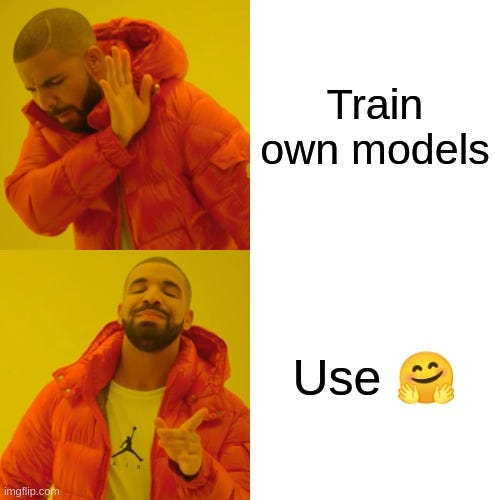
Hugging Face is easily one of the largest, if not the largest host of models on the internet. With over 100,000 models available, there is a low chance that your use case cannot be fulfilled by a model from here. These models are contributed by the community, small-scale teams, large-scale enterprises, and everything in between.
Enterprises like Google, Microsoft, and Facebook also release pre-trained weights for their latest models from their research teams here. This gives you access to cutting-edge models in a simple manner and without much overhead.
Moreover, you get this access for free (while a paid service exists for accessing better compute).
The ecosystem also provides support for ancillary tasks around ML, like Accelerate (for training pipeline setups), Diffusers (for working with Diffusion Models), Datasets (for accessing the latest datasets), and Spaces (for hosting your models) along with many more.
Step 2: How to use pre-trained models?
Below are code samples for how you can make pre-trained models from each of the ecosystems mentioned above:
keras.applications- Getting a ResNet-50 model
In the example above, we perform the following operations:
- We perform the necessary imports and get the ResNet50 model and its helper functions (present within the same submodule) from
keras.applicationsinto the environment. - We initialize the ResNet50 Model with the weights used being the ones from ImageNet pre-training.
- The
keras.applications.ResNet50model requires all images passed as input to be in a certain format. Hence, we must use the built-inpreprocess_inputfunction to make the changes. - We perform inference by passing our preprocessed input image to the
model.predict()function to get predictions. - Since the predictions are generated in the form of a confidence score along with the classes (where the class names are label-encoded), we make use of the
decode_predictions()function to make sense of the output we received.
- TensorFlow Hub: Getting the MLP Mixer model for generating Feature vectors
input_layer = keras.Input(shape=(224, 224, 3))
hub_layer = hub.KerasLayer(
"https://tfhub.dev/sayakpaul/mixer_b16_i21k_fe/1", trainable=True
)
x = hub_layer(input_layer)
output_layer = keras.layers.Dense(num_classes, activation=’softmax’)
model = keras.Model(inputs=input_layer, outputs=output_layer)In the example above, we instantiate a model using the Keras Functional API. In this, we perform the following steps:
- Define a
keras.Inputlayer that acts as an entry-point for the input tensor. Here, we define a shape that we can expect the input tensor to be. - We make use of the
tensorflow_hubpackage and import the model we want to use as ahub.KerasLayerthat downloads the model architecture and its trained weights for use. - We pass the input tensor to the layer we just made to perform a forward pass.
- We add a
keras.layers.Denselayer with the number of units equal to the number of classes, to generate softmax predictions. - Finally, we initialize a
keras.Modelinstance with the chosen input and output layers in order to create the final model. This is the method of instantiating Functional API-based models for Keras.
- Hugging Face ( transformers ): Getting the ViT model for 224 x 224 x 3 images
from transformers import ViTForImageClassification, ViTImageProcessor
feature_extractor = ViTImageProcessor.from_pretrained(
"google/vit-base-patch16-224"
)
inputs = feature_extractor(image, return_tensors="pt")
model = ViTForImageClassification.from_pretrained(
"google/vit-base-patch16-224"
)
with torch.no_grad():
logits = model(**inputs).logits
predicted_label = logits.argmax(-1).item()In the example above, we make use of PyTorch instead of TensorFlow. We perform the following steps:
- We perform necessary imports to get the ViT model and its required Image processing helper functions.
- We instantiate the ViTImageProcessor from the pre-trained weights as provided by the repository owner (in this case, Google).
- We pass our image into the feature extractor to get our images formatted and ready for inference. ViT models require images to be passed in the form of uniform patches. This specific model requires your image to be of size 224 x 224 x 3 along with each patch being 16 x 16 in size.
- We instantiate the ViTForImageClassification model and use the pre-trained weights from the same repository.
- We use torch.no_grad() to make sure that gradients are not calculated for forward passes within the defined scope. This is for generating predictions. The predictions come as confidence scores for all possible classes. We perform an argmax() over the entire output tensor to get the highest resultant class and use it as the final prediction.
Demo: Using it to make a customized pre-trained model
Now, we make use of a customized model in the form of a demo that we will use ahead in the latter part of the article as well.
# To force inference using CPU only
os.environ["CUDA_VISIBLE_DEVICES"] = "-1"
# Model definition
image_input = keras.Input(shape=(None, None, 3))
# Defining a resize Layer
x = keras.layers.Resizing(
height=224, width=224, interpolation="lanczos3", crop_to_aspect_ratio=False
)(image_input)
# Define a Rescaling layer to get image pixel values from [0, 255] to [0, 1)
x = keras.layers.Rescaling(scale=1.0 / 255, offset=0.0)(x)
# Instantiate a MobileNetV2 instance with pre-trained weights and the
# Dense classifier being trained for ImageNet classes
mobilenet = keras.applications.MobileNetV2(
alpha=1.0,
include_top=True,
weights="imagenet",
classes=1000,
classifier_activation="softmax",
)
# Passing input tensor for results
model_output = mobilenet(x)
# Make Keras Model
model = keras.Model(inputs=image_input, outputs=model_output)In this section, we have explored how we can make use of several different online services to access pre-trained models that allow us to move forward with developing on top of pre-existing work without requiring heavy Compute.
But this was only about the development of the solution. How do we actually get it out for the world to use?
Deployment
Step 3: Use TensorFlow Serving and SavedModel
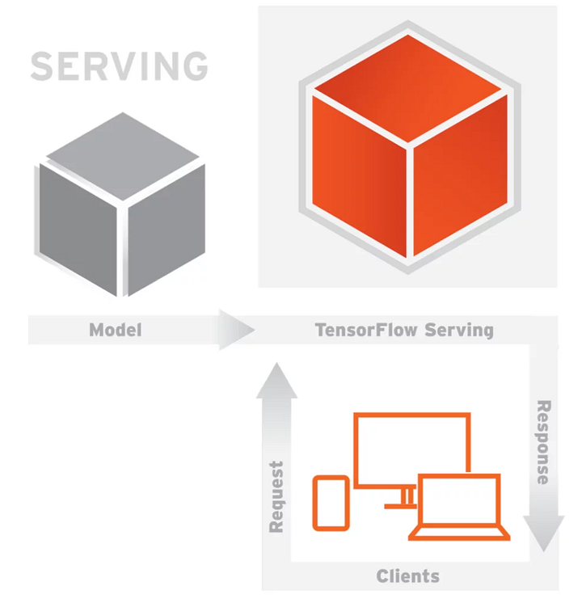
TensorFlow Serving is part of the larger TFX (TensorFlow Extended) ecosystem that helps users develop full production-scale pipelines. TF-Serving is a low-latency, high-throughput system that is flexible enough to allow a large array of options.
While more straightforward solutions exist to deploy models, like using Flask or Django, that would require you to write and maintain a lot of boilerplate along with performing maintenance, error-handling, and edge-case handling for the framework involved. With TF-Serving, all of that is abstracted away.
Another important fact is that TF-Serving is fully compatible with containerization, leading to no worries about packages, compatibility, dependency issues, and so on.
From here on forward, the example we have developed previously is what we will continue to use for the deployment experiment.
Below, we first write an inference function. This function will be used by TensorFlow Serving to process input and give results.
version_number = 1
@tf.function(input_signature=[tf.TensorSpec(name="image_bytes",
shape=None, dtype=tf.string)])
def predict_b64_string(b64str_tensor):
img = tf.reshape(b64str_tensor, [])
img = tf.io.decode_image(img,
channels=3,
dtype=tf.float16,
expand_animations=False
)
tensor = tf.expand_dims(img, axis=0)
return model.call(tensor)In the above snippet, we define version_number for TF-Serving to maintain version control of the different models present together.
The tf.function() decorator is perhaps the most important line of code in the above snippet. This decorator will perform a tracing of the function and generate a computation graph for it. As a default, TensorFlow 2.0 defaults to Eager Execution to allow for better debugging. But the most performant way of execution is in the Graph mode. This decorator will trigger the heavy lifting and prepare the function in a language-agnostic definition. Here, we define a tf.TensorSpec that allows us to define the kind of Input Tensor the function should expect. That means we will accept an input consisting of the bytes of the image in the form of a Base64 string.
We then perform the simple operations of decoding the image, preparing the tensor by batching it, and performing a forward class to generate results.
model.save(
f'./mobilenetv2-imagenet-devfest/{version_number}',
save_format='tf',
include_optimizer=True,
overwrite=True,
signatures={
"serving_image_b64string":predict_b64_string
}
)Here, we call the model.save() a function that is integral to the deployment process. It requires the following arguments:
- File path: TF-Serving requires you to save it in the format of
{model_name}/{version_number}. - Save Format: Setting this to
'tf'will save the model as a KerasSavedModel, helping you to save model metadata, custom functions, weights, optimizer states, and so on. This is required for TF-Serving because the model will be run in Graph mode only. - Include Optimizer: Choose whether to include the optimizer state in the saved package
- Overwrite: Choose whether to overwrite old data that may be present in the same file destination
- Signatures: Here, we must define the function that should be used by TF-Serving to create the model endpoint and subsequently use it for inference. Here we give a name to the signature and pass the function object to it in the form of a dictionary
Step 4: Export SavedModel to Docker Image
[suvaditya@fedora ~ ]$ docker run -d --name serving_base tensorflow/serving
[suvaditya@fedora ~ ]$ docker cp /absolute/path/to/saved_model/model_name \
serving_base:/models/model_name
[suvaditya@fedora ~ ]$ docker commit --change “ENV MODEL_NAME model_name” \
serving_base devfest-mobilenet-demo
[suvaditya@fedora ~ ]$ docker run -t -p 8501:8501 devfest-mobilenet-demoThe code snippet above is a series of Docker commands that will perform the following steps:
- We first create a dummy container that is initialized using the tensorflow/serving image present on Docker Hub. We run it in a detached mode.
- We give a cp instruction that will copy the contents from a source to the target directory for the Dockerfile of the image. Here, we copy the contents of the SavedModel file structure to a path in the container’s file system where TF-Serving expects your model’s files to be.
- We commit the changes made to the Dockerfile, insert a new Environment variable for the container, and give a new name to this changed Dockerfile as devfest-mobilenet-demo coming from the serving_base container as the base.
- Finally, we run a new container using the image we just created. We expose and forward requests to Port 8501 as TF-Serving is configured to serve REST API requests on this port. If you require, a separate gRPC server is also available on Port 8500 that can be exposed in a similar manner
Step 5: Create Vertex AI Model and Endpoints
Note: The following steps require the presence of a Google Cloud Billing-enabled account. GCP offers $300 in credits for a duration of 90 days. To know more, click here.
Now, we move to Google Cloud Platform and its state-of-the-art Vertex AI offering.
What is Vertex AI?
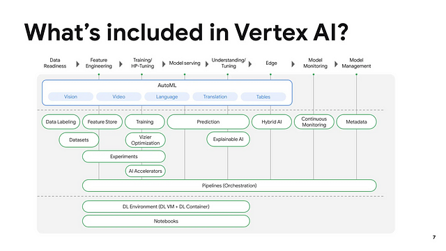
Vertex AI is the official end-to-end solution for all things ML present on GCP. It offers tools to work on each aspect of the full Machine Learning lifecycle.
- Dataset Collection and Version Control
- Labeling
- Pre-processing
- Training
- Deployment
- Model Version
- Logging & Monitoring
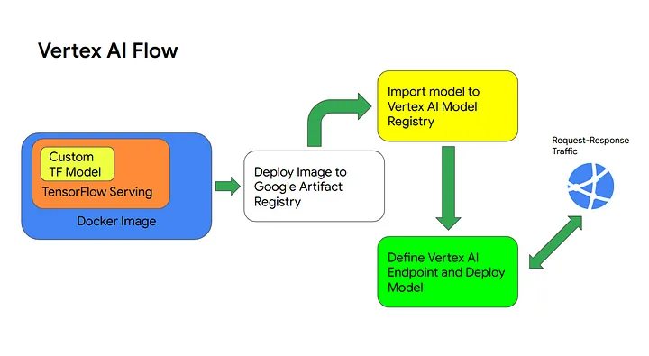
We have already made a Docker Image that serves the model inside a TF-Serving runtime. Our Vertex AI Model deployment flow will consist of the following steps:
- Deploy the Docker image we developed into Google Artifact Registry. This is done in order to maintain a central source for all model versions. Google Artifact Registry is the best solution for storing artifacts as it allows multiple different formats like Maven Packages, Docker Images, etc. all in one place, in comparison to the older Google Container Registry.
- Import and create a Vertex AI Model resource from Artifact Registry.
- Create a Vertex AI Endpoint that will accept the Vertex AI Model
- Deploy the Vertex AI Endpoint and serve it for request-response traffic from the web.
1. Put image into Artifact Registry
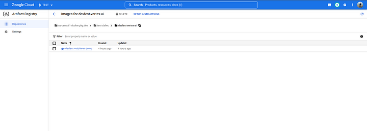
[suvaditya@fedora ~]$ docker tag devfest-mobilenet-demo \
us-central1-docker.pkg.dev/test-da9ec/devfest-vertex-ai/devfest-mobilenet-demo
[suvaditya@fedora ~]$ docker push \
us-central1-docker.pkg.dev/test-da9ec/devfest-vertex-ai/devfest-mobilenet-demoHere, we first go to the Artifact Registry screen and create a repository. We configure it to store Docker images. We tag the image using the URL of the repository which is of the format
{region}-{zone}-docker.pkg.dev/{project-id}/{repository_name}/{artifact_name}
We push the image to the same URL and upon the building of the image and its subsequent upload, it will be visible on the Console.
2. Create Vertex AI Model resource
To deploy our model, we have two steps. First, we must define a Vertex AI Model instance. This is done by importing the container image from Google Artifact Registry.
In our case, first, we set devfest-mobilenet-imagenet as the name of our model. We can also provide a small description of the model for documentation purposes.
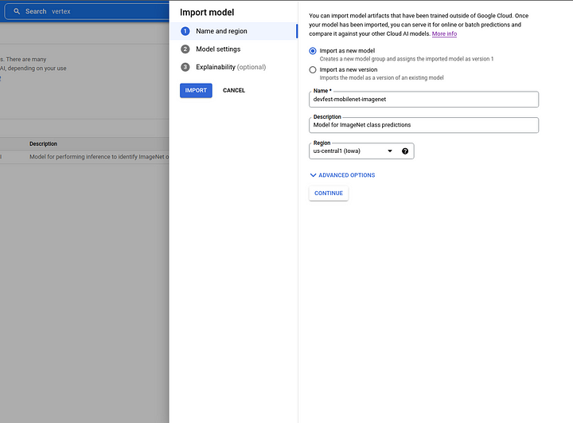
Once the model is named, we choose the actual container image from Google Artifact Registry that we are going to use. Circling back to our example, we make use of our previous devfest-mobilenet-demo image as the basis of our model.
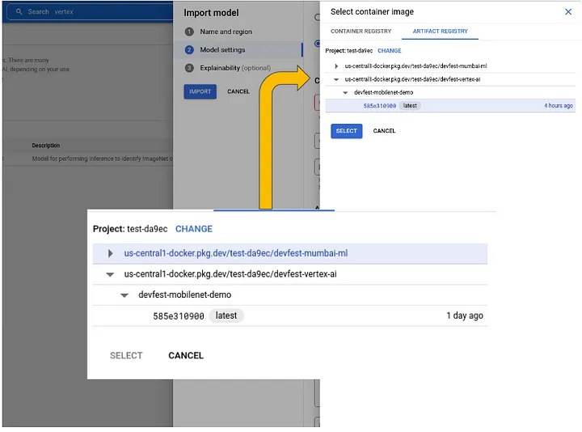
If your solution is more customized (maybe using something other TF-Serving), you can choose to override the CMD or ENTRYPOINT line of your Dockerfile using the Command field during configuration. Options to set new Environment Variables or Arguments to the process are also present.
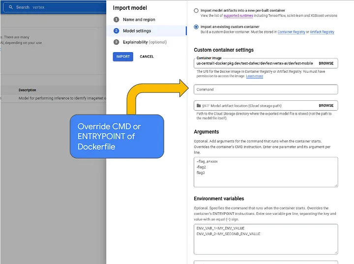
Finally, saving the model will allow you to see it on the Console.
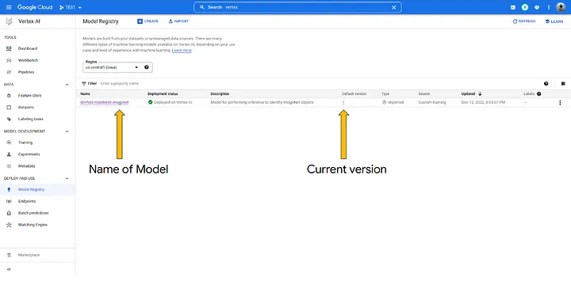
3. Create Vertex AI Endpoint resource
With the Vertex AI Model prepared, we now make use of the console to create a Vertex AI Endpoint resource. This endpoint is what will control the full deployment, be it auto-scaling, security, serving, etc.
We can click on ’Create Endpoint`, which will lead us into the endpoint-creation wizard.
In the first line, we give a name to our new Endpoint, followed by setting it up in a specific Region. Here, since our project is setup in us-central1 , we are going to be restricted to just that. If we have a multi-region project, we can choose other locations too. We also get the option to set up access to the endpoint. If we choose, we can expose the endpoint freely to the internet, or we can make the endpoint private using a VPC network.
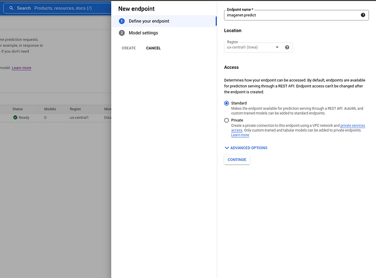
Now, we connect a Vertex AI Model with the Endpoint by using the model we had defined. We get to choose the version of the model we want to deploy. If we have multiple instances serving the model on the endpoint, we can choose to perform a traffic split. But if it is a single instance, we keep it to a full 100% split.
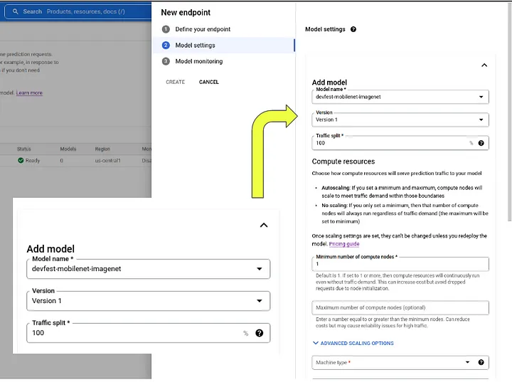
In this set of options, we can specify the configuration and the number of compute nodes we would like the model to use. These are backed by GCP Compute Engine and are fully managed. This solution, by its design, auto-scales according to demand and constraints. While a minimum number of compute nodes is set to maintain the availability of the service, we can set a maximum number to control costs.
An option to set a certain CPU threshold allows us to control when the service will scale up (or down) based on CPU usage.
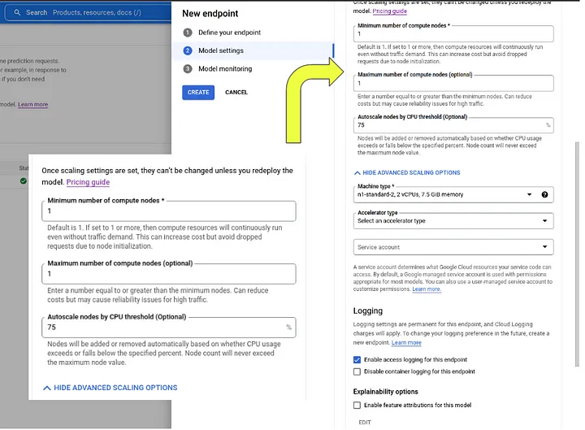
GPU acceleration is also made available for inference compute, as specified by the Accelerator type. If you have IAM set up within your project and have the permissions policy present in your organization, you can use a Service Account to set what kind of resources the service can requisitions, as an added security check on top of other cost-saving measures.
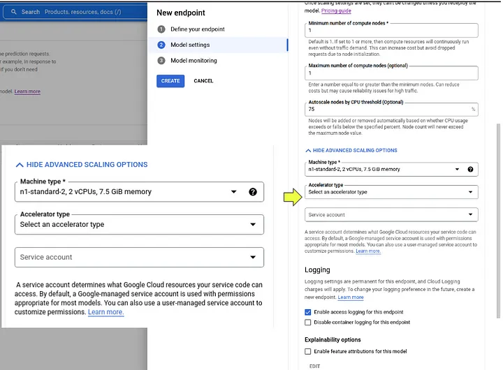
Finally, we get options to enable and set up model monitoring, which would include the tracking of several metrics like Drift, Skew, etc. which allow us to understand how our model performs in production settings and what kind of changes are necessary to make sure that it performs as expected.
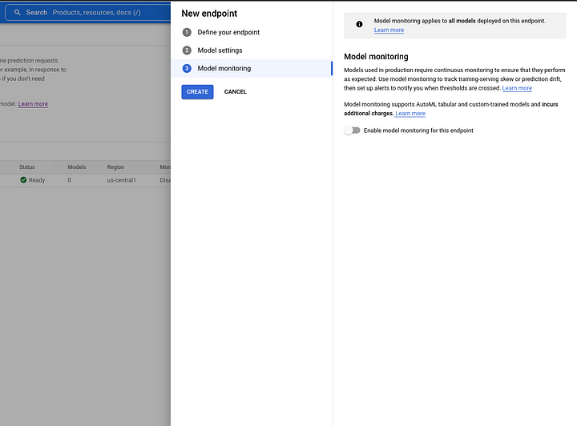
Now, let us see our deployment in action!
Step 6: Perform Testing and Inference
First, perform authentication into gcloud SDK on your local machine. Prepare the request in the form of a JSON file that will be sent in the body of the request. Make sure that you include the signature name to use since that becomes an integral part of how the model.
[suvaditya@fedora ~]$ gcloud auth application-default login
[suvaditya@fedora ~]$ echo {
"instances": [{
"image_bytes": {
"b64": “<BASE64-OF-IMAGE-HERE>”
}
}
],
"signature_name": "serving_image_b64string"
} >> sample_request.jsonFor better readability, add your Vertex AI-provided Endpoint ID and Project ID as environment variables in your shell. Finally, we define a cURL POST request as per the specifications in the code snippet below.
[suvaditya@fedora ~]$ ENDPOINT_ID="<YOUR-ENDPOINT-ID-HERE>"
PROJECT_ID="YOUR-PROJECT-ID-HERE"
INPUT_DATA_FILE="sample_request.json"
[suvaditya@fedora ~]$ curl \
-X POST \
-H "Authorization: Bearer $(gcloud auth print-access-token)" \
-H "Content-Type: application/json" \
https://us-central1-aiplatform.googleapis.com/v1/projects/${PROJECT_ID}/locations/us-central1/endpoints/${ENDPOINT_ID}:rawPredict \
-d "@${INPUT_DATA_FILE}"Predictions :
What you see below are the predictions of shape (1, 1000) that represent a tensor with output confidence scores for each of ImageNet’s 1000 classes.
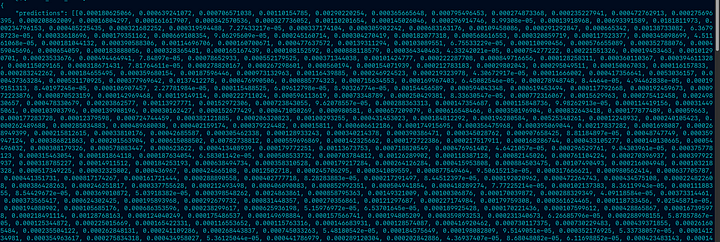
What have we accomplished?
By this time, we have completed all our setup. Quite a few things were done within this article. Take a look back at the problems we set out to solve:
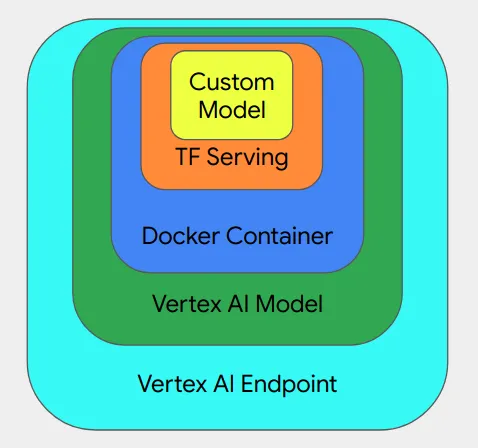
- Scale: The solution we made is one that can be used in a production setting. With the capability of Vertex AI and the services for Auto-Scaling and Monitoring, you can leverage state-of-the-art tech to make sure your model is deployed in the most performant way possible.
- Can integrate with CI/CD Pipelines: Our solution is one that can be integrated into CI/CD pipelines due to Google Artifact Registry, which can be as simple as pushing to the registry. You can make use of other GCP Services (or Vertex AI) that will allow you to orchestrate the updates automatically.
- Optimizations: TF-Serving is inherently performant, allowing you to serve your model without any hassle. Due to its low-latency nature and graph-mode execution, performance is not a thing you need to worry about.
- Modularity: Each and every one of these components is easily replaceable or can be repaired with relative ease, compared to more rigid or non-debuggable products.
- Tracking: With state-of-the-art tracking features, your model performance is only a click away. You can leverage automatic insights from Vertex AI as well.
Where to go from here?
Machine Learning can solve a major number of modern-day problems that startups or any kind of problem-solving body faces. Hence, it becomes an important field to stay on top of. But it is equally important to focus on the deployment aspect since, without it, your service is not available to your customers, leading to no value being added.
Below are some interesting reference links that can allow you to explore the world of TensorFlow Serving and Vertex AI further.
Reference Documents
Acknowledgments
Thank you to Vaibhav Malpani from GDG Cloud Mumbai for providing the GCP credits required to run the demo.
Thank you to Romin Irani for the opportunity to publish the blog in this publication.
Thank you to Sayak Paul for guiding me towards Vertex AI (a very useful demo created by him that I made use of, as a reference point: Deploying ViT on Vertex AI)
Thank you to all the folks who reviewed my slides as part of my talk at GDG DevFest Raipur on the same topic.